From flask to flexible device.
Synthesis pathways and nanostructure morphologies, a high-voltage polymer electrolyte, and the flagship flexible solid-state hybrid supercapacitor they add up to.
Synthesis pathways & nanostructure morphologies.
An array of nanostructures in transition-metal sulfides, oxides, phosphides and MXenes — each morphology chosen for surface area, conductivity or ion-intercalation kinetics.
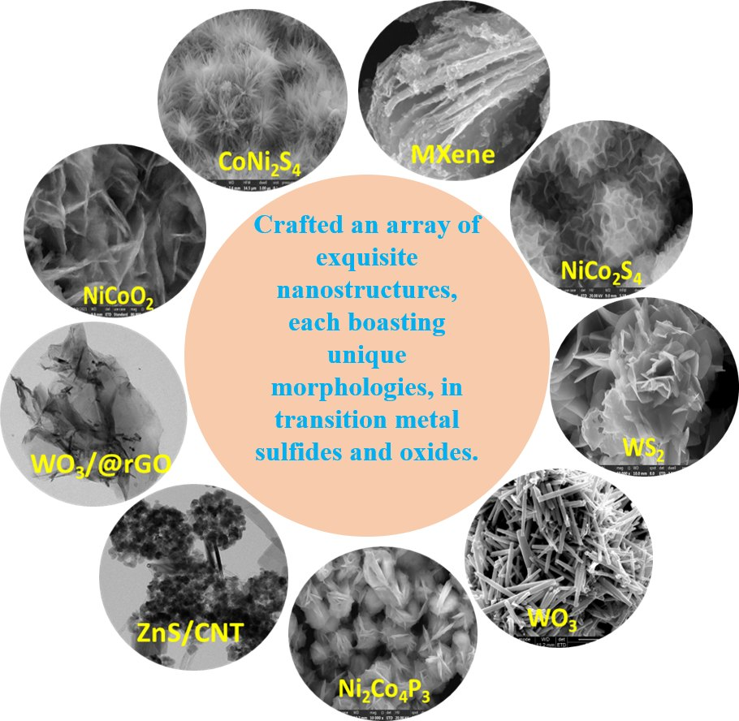
- 01WS2Nanosheets, nanoplates & micro-flowers
- 02NiCo2S4Nanospikes and nano-urchins
- 03WO3, WO3/rGONanorods wrapped in rGO
- 04Ti3C2Tx MXeneLayered flakes decorated with active material
- 05CoNi2S4Nano sea-urchins
- 06NiCoO2Nanopetals
- 07ZnS/CNTPearl-embedded hybrids
- 08Ni2Co4P3Interconnected sheet architectures
- 09WS2/rGO/MWCNTHybrid composites
One compound, six morphologies.
Synthesised WS2 was explored as an anode in lithium-ion batteries. By varying the route — exfoliation, hydrothermal growth, compositing with reduced graphene oxide and multi-walled carbon nanotubes — the same compound was grown as exfoliated flakes, nanosheets, nanoplates, micro-flowers and rGO/MWCNT hybrids.
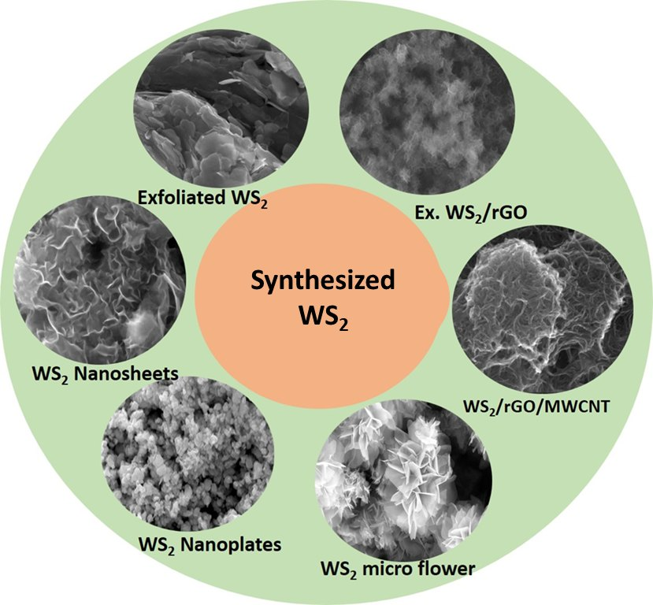
An ionic-liquid polymer electrolyte that is wide, hot and stretchy.
PDADMATFSI + P14TFSI, with KI and DPA additives: an electrolyte membrane built for high-voltage, flexible devices.
Linear sweep voltammetry shows a stable window of 5.9 V for PDADMATFSI + P14TFSI + KI + DPA.
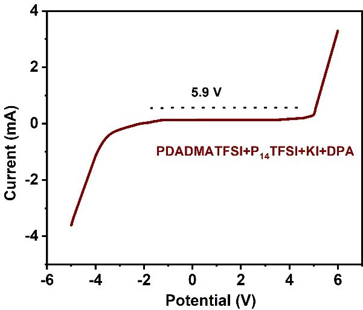
Thermogravimetric analysis: the membrane holds its weight until above 400 °C, with or without the DPA + KI additives.
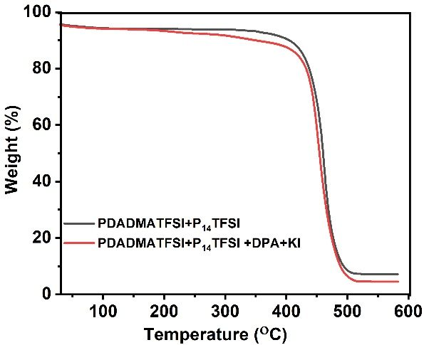
Adding DPA + KI raises elongation at break from ~160% to over 225%, with higher tensile stress.
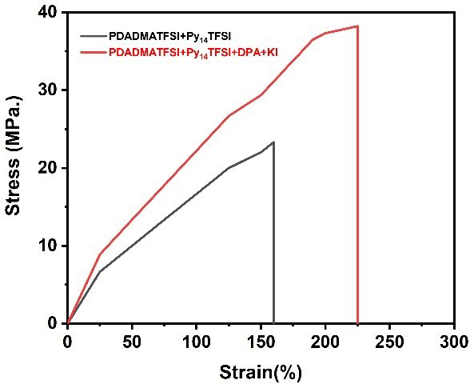
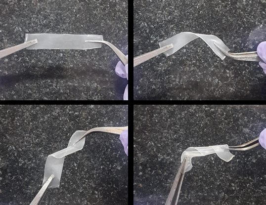
Why it matters
Conventional liquid electrolytes limit both safety and operating voltage. A solid, transparent membrane that tolerates high voltage, high temperature and real mechanical deformation is what lets a device be both energy-dense and wearable.
Sengupta et al., Chemical Engineering Journal, 490 (2024) 151866Flexible solid-state hybrid supercapacitor.
Sengupta et al., ACS Appl. Energy Mater. 2024, 7, 4243–4251
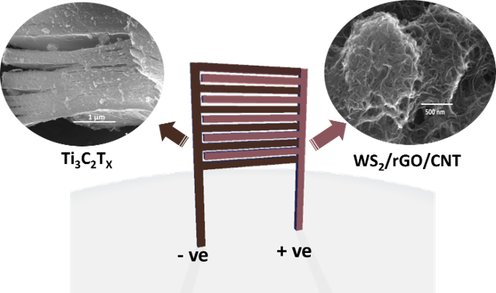
- Negative (–)Ti3C2Tx MXene
- Positive (+)WS2/rGO/CNT composite on flexible carbon cloth
- ElectrolyteIonic-liquid polymer electrolyte, up to 5.9 V window
- StructureFlexible interdigitated coplanar configuration
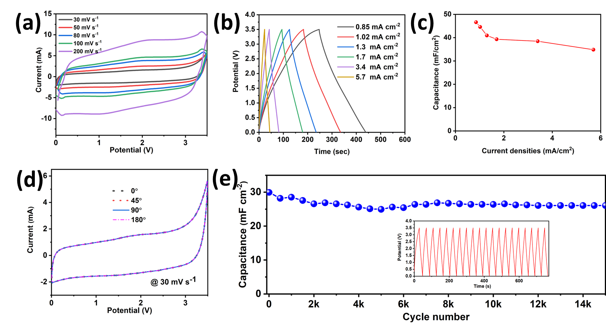
Photo demonstration gallery
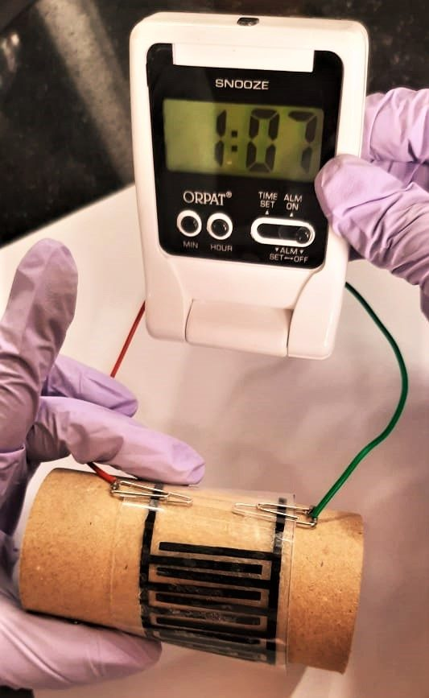
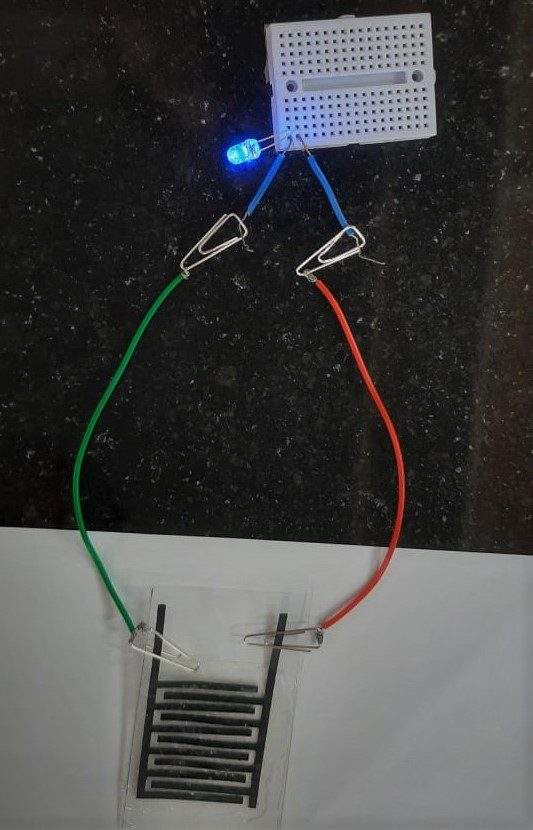
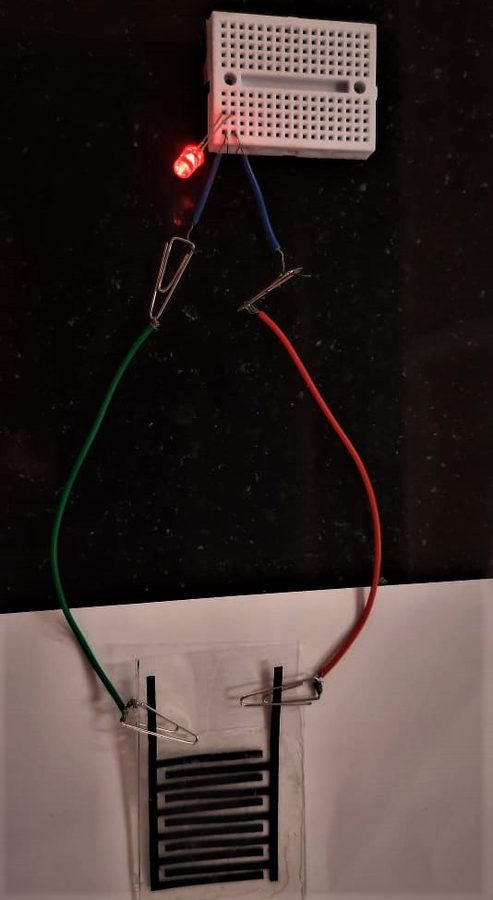
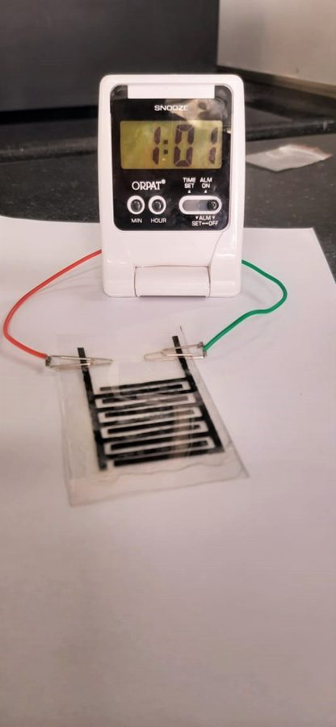
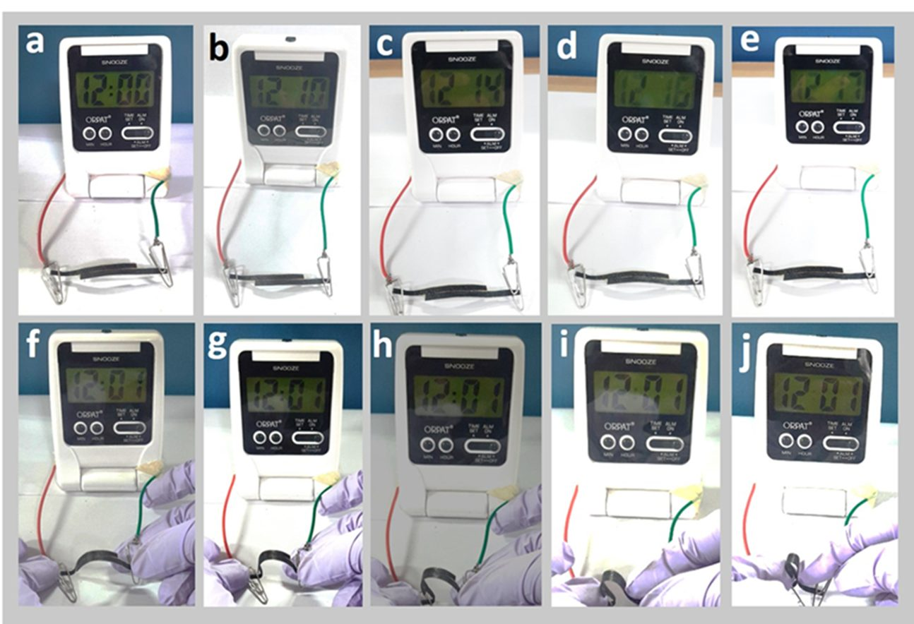